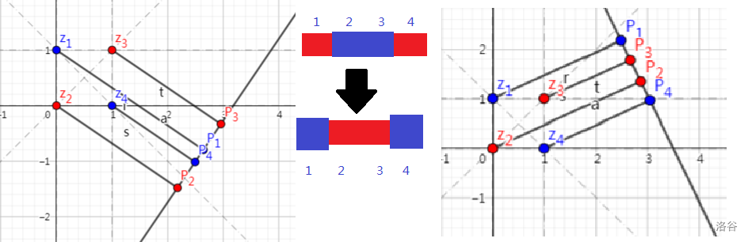

P4385 [COCI2009 Final Exam#2] Dvapravca
样例演示1
样例演示2
给定 \(n\) 个红色或蓝色的点，三点不共线，求中间没有蓝点的两条平行线间最多能有几个红点。
显然，两条平行线一定不会是两点间的连线，否则将平行线旋转足够小的角度 \(\delta\) 后可以得到另一个更优的解。
假设两条平行线都垂直于直线 \(l\)，过每个点作 \(l\) 的垂线，得到 \(n\) 个点，那么问题就转化为求投影序列上的最长连续红色子段。样例演示1 可以很直观的解释这个思路。
考虑动态维护这个序列。找出这 \(n\) 个点间的所有连线，当 \(l\) 垂直于连线时，就交换连线两端的点对应的颜色。看下面这张图就可理解。

当你理解这一步时，你已经能做出这道题了。
用线段树维护最长连续零个数，时间复杂度 \(O(n^2\log n)\)。
然鹅
不用线段树，暴力维护连续零加上O2 也能 AC！
参考程序
1
2
3
4
5
6
7
8
9
10
11
12
13
14
15
16
17
18
19
20
21
22
23
24
25
26
27
28
29
30
31
32
33
34
35
36
37
38
39
40
41
42
43
44
45
46
47
48
49
50
51
52
53
54
55
56
57
58
59
60
61
62
63
64
65
66
67
68
69
70
71
72
73
74
75
76
77
78
79
80
81
82
83
84
85
86
87
88
89
90
91
92
93
94
95
96
97
98
99
100
101
102
103
104
105
106
107 | #include<iostream>
#include<cstdio>
#include<cstring>
#include<algorithm>
#include<cmath>
#include<vector>
#include<queue>
using namespace std;
#define il inline
typedef long long ll;
ll gcd(ll a,ll b){
return b==0?a:gcd(b,a%b);
}
typedef double Grad;
int n;
struct Node{
int x,y;
int p;
char c;
}a[1005];
bool cmp(Node a,Node b){
return a.x!=b.x?a.x<b.x:a.y>b.y;
}
int s[1005];
struct Line{
int i1,i2; // id
Grad G;
Line(){} Line(int a_,int b_){i1=a_,i2=b_;G=1.0*(a[i2].y-a[i1].y)/(a[i2].x-a[i1].x);}
bool operator<(Line b){
return G<b.G;
}
}ls[1000006];
int ms=0;
vector<pair<int,int> > sw[1000006];int st;
int did[1006],id[1006];
int main(){
scanf("%d",&n);
for(int i=1;i<=n;i++){
scanf("%d%d",&a[i].x,&a[i].y);
a[i].c=getchar(); while(a[i].c!='R' && a[i].c!='B'){ a[i].c=getchar(); }
}
sort(a+1,a+n+1,cmp);
for(int i=1;i<=n;i++){
s[i]=((a[i].c=='R')?0:1);
}
for(int i=1;i<=n;i++){
for(int j=i+1;j<=n;j++){
ls[++ms]=Line(i,j);
}
}
sort(ls+1,ls+ms+1);
st=1;sw[1].push_back(make_pair(ls[1].i1,ls[1].i2));
for(int i=2;i<=ms;i++){
if(ls[i].G!=ls[i-1].G){
st++;
}
sw[st].push_back(make_pair(ls[i].i1,ls[i].i2));
}
int ans=0;
int l=1; // 永远焕发光芒的暴力维护区间
for(int j=1;j<=n;j++){
if(s[j]==1){
l=j+1;
}
if(s[l]==0 && s[j]==0){ans=max(ans,j-l+1);}
}
for(int i=1;i<=n;i++){id[i]=did[i]=i;}
for(int i=1;i<=st;i++){
for(int j=0;j<sw[i].size();j++){
int x=sw[i][j].first,y=sw[i][j].second,u,v;
swap(did[x],did[y]);
swap(id[did[x]],id[did[y]]);
u=s[did[x]],v=s[did[y]];
s[did[x]]=v,s[did[y]]=u; // 完全没用的调试信息
}
int l=1; // 运用反复的修辞手法
for(int j=1;j<=n;j++){
if(s[j]==1){
l=j+1;
}
if(s[l]==0 && s[j]==0){ans=max(ans,j-l+1);}
}
}
printf("%d\n",ans);
return 0;
}
|